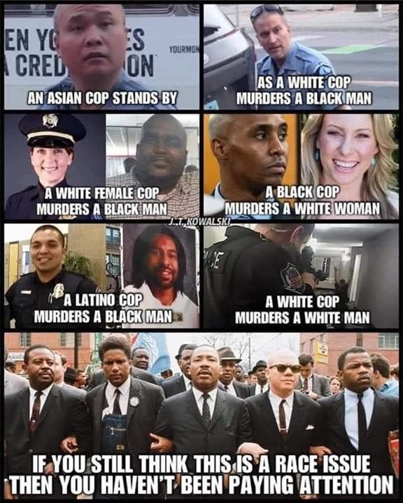
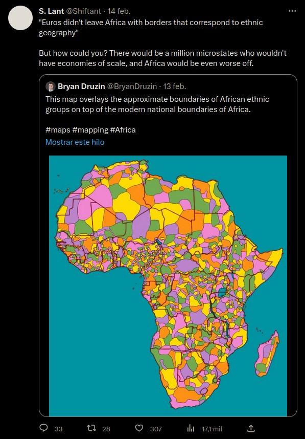
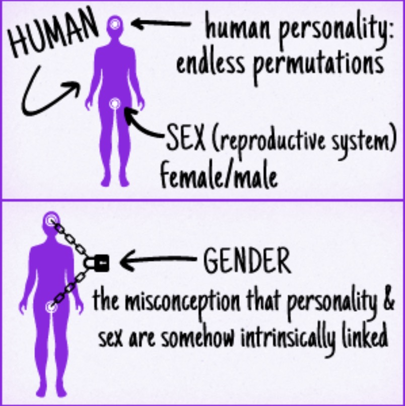

Why Racial Oppression Of Minorities In the United States Is A Complete Myth
Table of Contents
Note: I will probably expand this post in the future.
1. Reasons Why The Supposed Racial Oppression Of Minorities In The United States Is A Myth
- “Oppressed” racial minorities aren’t leaving the United States. If anything, they’re immigrating to the United States.
- Historically, Native Americans, Native Hawaiians, and others fought lots of wars with each other. So why was it any different from white Europeans arrived to the New World and did the same thing? Even if the Native Americans did somehow manage to build more powerful civilizations with more advanced technology, they still would’ve eventually died out as soon as they came in contact with Old World diseases.
- The best explanation for different crime rates between different races is that they’re caused by their different genetics, since that’s what the definition of a race is and also since this would be the conclusion of Occam’s Razor. The homicide rates of blacks and Hispanics in the United States match those of sub-Saharan Africa and Latin America respectively. It makes perfect sense that races whose populations have been historically and predominantly limited by tribal warfare (e.g. sub-Saharan Africans and Native Americans) evolved to be more violent and have naturally higher crime rates than racial populations that were primarily limited by diseases and famines instead (e.g. Europeans and East Asians).
- Ghettos are largely caused by genetics: It’s Probably Mostly Genetic
- The Asian minority in the US used to be very oppressed, but now it’s among the most success and well-off for its size. If Asians can rise from the bottom to the top, this is evidence that nothing was really preventing other minorities from doing the same, besides genetic tendencies and variations of course.
- The average black or hispanic person in the US is lives a far better life than someone of the same ethnic group but lives in a different country.
- Even after 50+ years of time to recover socially and economically, plus a variety of affirmative action policies / propaganda, blacks still don’t have the same prosperity as whites. At some point, a rational-minded person will have to ask: Is this really an issue that can be fixed by “improving” the environmental circumstances? Or is it the case that blacks will never achieve the same prosperity as whites without intervention since race realism is a thing?
- ~67% of blacks in the US are raised by single parents. Obviously, this has a huge impact on how most of the blacks would develop later on in life. But how could racism be feasibly attributed to causing most blacks to be raised by single parents, and thus experiencing poorer life outcomes as a result of that?
- The population of Africa skyrocketed after the Europeans colonized the continent, which implies that European colonization was largely a good thing since it largely ended war, disease, and famine in Africa for the time being.
- Racial disparities in wealth, academic achievement, educational attainment, crime rates, etc are better explained by Race Realism.
Black History: Africa Largely Benefitted From European Colonization More Than It Suffered

The image above only covers murders, but another example of police brutality that caught national headlines is how two black police officers dragged an Asian man off that one United flight. It should also be noted that George Floyd was saying that he couldn’t breathe before he got on the ground and the police officer put his knee on neck and back, so it’s possible that he would’ve died even if there was no knee placed on his back since he had a drug overdose and COVID-19, both of which would’ve made it hard for him to breathe (not to say that the officer’s behavior was justified). More recently, the murder of Tyre Nichols (who was African American) in January 2023 was done by five African-American police officers.
2. The Hypocrisy Of The Left-Wing Worldview On The Oppression Of Minorities
Valuing diversity should imply valuing discrimination, otherwise what value is there to be gained from having diversity? If there is variation, but no selection, there will be no improvements in the ideas or output. Likewise, if there is no diversity, then there would be no value to discriminating. If there is no variation, then there is nothing to select from.
If the left-wing worldview is taken to its logical conclusion, it actually would lead to complete racial segregation. On the one hand, they don’t believe that there are any important differences between people of different races, but if that’s the case, then there can’t be any possible benefit to diversity because we’re all the same. And yet they celebrate diversity, even though they have no reason why it would make anybody’s life better.
At the same time, there are these supposed disadvantages that are created by being a minority, so the logical conclusion should be that the best thing to do would be to segregate people by race, so that they don’t face that disadvantage of being a minority.
If other cultures and peoples are so insightful, then why don’t the leftists live in those countries? The vast majority of them wouldn’t live anywhere else but the West, except maybe Japan and other Western-influenced countries.
The borders of Africa are blamed for separating so many ethnicities, religions, languages, etc across Africa by country borders. But at the same time, the leftist humanists are strongly in favor of some sort of diverse, multi-ethnic utopia where all people of all races live in harmony and prosperity with each other. If they believe that that would be both possible and favorable, then why do they still blame the way the borders of Africa were drawn for separating various demographics of people between state lines?

Reparations for historical wrongdoings are pointless once the wrong generations are all dead. Literally everybody has ancestors who did horrible things, so it’s not coherent or feasible to give reparations to people who are descended from dead people who have been wronged in the past decades or centuries ago. Not only that, but many people are mixed race between blacks and whites, so how would it be rationally determined how many reparations those people would give or lose?
Great Video On This Topic: If Pro-Immigration And Pro-Diversity Arguments Were Taken To Their Most Logical Conclusion
3. Hard Facts
- Blacks commit 36% of the violent crime in the US, even though they are only 13% of the population.
- The homicide rates of blacks in the United States are nearly identical to the crime rates of Subsaharan Africa, and the homicide rates of whites in the US are nearly identical to the homicide rates of the whites in Europe. Occam’s Razor concludes that this is most likely because these groups have the same genetics as their counterparts who live across the Atlantic Ocean.
- Despite Muslims making up 25% of the World population (and counting), Muslims make up less than 1% of the world’s scientists and other STEM professionals.
- Islamic countries have the highest incest rates in the world, since their stupid religion makes it difficult to meet members of the opposite sex in socially acceptable ways, besides meeting their cousins. Even Wikipedia confirms that this is true: Consanguine Marriages; Islam has been causing these mating patterns for centuries, and it’s taken a massive toll on the intelligence and genetic quality of the human race.
- Although leftists would like to blame the Europeans for drawing Africa’s borders the way they are, there’s no reason why they should be against it according to your worldview. If leftists aren’t opposed to ethnically diverse and religiously diverse countries, then what’s wrong with Africa’s borders? Shouldn’t leftists believe that it’s a good thing that different ethnic groups are being forced to live with each other under the same borders?
